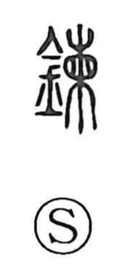

練

Uncategorized
Kun: neru, nereru | On: ren
to refine ・ to train ・ to practice ・ to knead
Explanation
This is a phono-semantic character whose oldest form was written 鍊, with 柬 serving as the phonetic element. The graph 柬 depicts a sack with something inside it, evoking a receptacle used in making or processing goods, and thus suggests manufacture. The Shuowen glosses the word as “to regulate metal,” that is, to heat it and cleanse away impurities—tempering and refining. Related graphs distinguish the methods: 涑 denotes refining by water, while 煉 denotes refining by fire. From this image of purification and working material to perfection, the character came to express the training and polishing of body, mind, and technique, as in compounds like 練磨 and 鍛練.